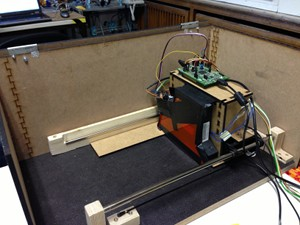
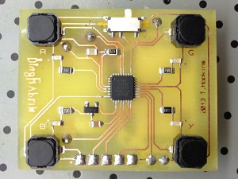
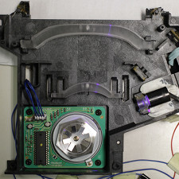

The PCBWriter uses a laser diode to directly expose the photoresist on PCBs. The direct exposure technique removes a lot of the typical problems with toner transfer or laser printer transparencies, allowing to reliably create PCBs even with the small structures needed for todays chips.
Status
The PCBWriter is currently under development. A first version has been constructed and successfully exposed PCBs. We are currently working on fixing bugs and on various improvements to hard- and software.
A similar device has been developed at Das Labor in Bochum. Experience there shows that the technique is indeed able to produce very fine structures with high fidelity.
Photos
-  PCBWriter hardware
-  First demo PCB, completely populated. The chip in the middle is an Atmel ATtiny in a 32 pin, 0.5mm pitch QFN package.
-  Polygon mirror assembly opened, showing the beam path using a low-power laser diode. (Note that the lenses were later removed.)
{kind=link}
{kind=link}
{kind=link}
Development
Firmware and schematics are on Github: https://www.github.com/pcbwriter/pcbwriter.
There are currently no "end-user ready" instructions or downloads available.
If you are interested to participate in the development, please contact us!
License
The code and schematics of the PCBWriter project are available under the GNU General Public License, version 2 or later.
Note that the firmware makes use of libopencm3, which is available under the LGPL, version 3 or later.